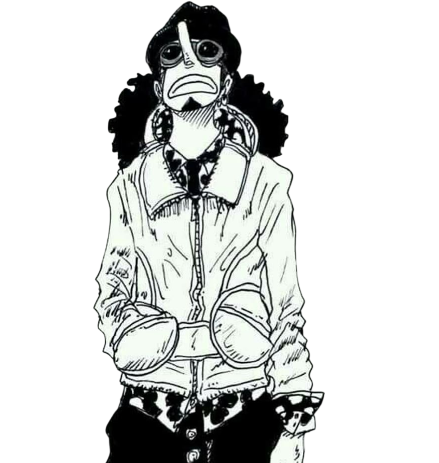

Usopp (Japanese: ウソップ, Hepburn: Usoppu), also known by his titles Sogeking and "God" Usopp, is a fictional character in the One Piece franchise created by Eiichiro Oda. The character made his first appearance in the 23rd chapter of the series, which was first published in Japan in Shueisha's Weekly Shōnen Jump magazine on January 12, 1998. He is the fourth member of the Straw Hat Pirates and the third to join, serving as their sniper. He was the fourth member to join Luffy's crew and the third officially after the confrontation they had with Captain Kuro.[3] His dream is to become a great pirate like his father Yasopp, member of the Red-Haired Pirates, captained by "Red-Haired" Shanks. Usopp is recognizable for his long nose, a reference to the fact that he tends to lie a lot. He is a gifted inventor, painter, and sculptor.[ch. 42, 106, 190] In combat, he relies primarily on his slingshot to fire various kinds of ammunition with great precision in coordination with a set of lies and other weapons giving him a unique fighting style named "The Usopp Arsenal".[ch. 332] To help the Straw Hats rescue Nico Robin, he achieves notoriety under his alter-ego "Sogeking, the King of Snipers" (狙撃の王様そげキング, Sogeki no Ō-sama Sogekingu), a hero sniper wearing a golden mask and cape.[ch. 435] Usopp’s declaration of war on the World Government flag is cited by fans and critics alike as one of the best moments of One Piece.[4] Eventually, after helping the Straw Hats liberate Dressrosa from Don Quixote Doflamingo's rule, he becomes infamous as "God" Usopp (ゴッド ウソップ, Goddo Usoppu) due to freeing thousands of people from lives as slave toys, as well as light shining from above onto Usopp whilst underground as he addressed the people he freed
For more info visit this page